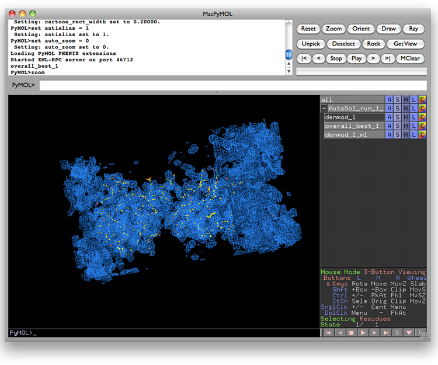

- PyMOL was originally written by Warren DeLano, and is now distributed by Schrodinger LLC.
NOTE: We distribute an obsolete build of PyMOL (version 0.99) with the Linux installers for PHENIX; however, we recommend using a more recent version for more advanced functionality such as anisotropic B-factor ellipsoids and object groups. There are several options for obtaining PyMOL: you can purchase a license from Schrodinger, you can download and compile the latest open-source code yourself, or you may be able to install it automatically using a third-party packaging and distribution system if one exists for your platform. (Macintosh users can use Fink.) The extensions provided by PHENIX do not require any features beyond those in open-source PyMOL, but the full documentation (and the native Mac GUI) is only available with a license.
Configuring and launching PyMOL from within the PHENIX GUI is very similar to what is done for Coot; if it is already part of your PATH environment variable or installed in a standard location such as /Applications on Macintosh, no additional configuration will be necessary. Most programs in PHENIX which output models and/or maps will have buttons to automatically open these in PyMOL. Although PyMOL is limited to reading pre-calculated map files (not map coefficients in MTZ format), PHENIX will perform the necessary FFT when requested to generate CCP4 maps if not are available.

Most applications output either a simple F(obs) map (FP PHI FOM), often after density modification, or a pair of 2mFo-DFc and mFo-DFc difference maps. By default, the F(obs) and 2mFo-DFc maps will be contoured at 1 sigma (1 standard deviation above the mean) and colored blue, and the mFo-DFc map will be contoured at +/- 3 sigma and colored green and red. You can change these colors in the Preferences (Color section).
Like Coot, PyMOL can be used as a viewer for any PDB file loaded in the PHENIX GUI by clicking the magnifying glass icon next to the input controls or file name. You can make it the default viewer in the Preferences (Graphics section).
Here are some simple controls that let you choose what you see in PyMOL, assuming that you have a model (pdb_1) and a map (map_1) or maps loaded.
- Click a few times on "pdb_1" you will see the model turn off and on. Same for "contour_1.5". Similarly "all" turns everything on and off, and "map_1" turns the unit cell box (which may not be visible in your viewer) on and off.
- To the right of "pdb_1" you will see buttons labelled "A" "S" "H" "L" and "C". Click on each one and you'll see what they do: - "A" : Actions. lets you recenter, delete the object, and more - "S" : Show. For a model you may want to show sticks for clarity. - "H" : Hide. Undoes show. - "L" : Label. Choose what labels to display - "C" : Color. Choose colors.
- The little table in the lower right of the PyMOL display window shows what each mouse button does. If you have a 3-button (2 buttons and a roller) mouse, then hold the left button down and move the mouse to rotate; right button down and move the mouse to change the size; both buttons down and move the mouse to move the center.
- If you accidentally click the wrong buttons and some new object appears on the screen that you do not want, click on the "A" botton for the new object and select "delete" to get rid of it.
- PyMOL home page
- PyMOL Wiki, an excellent community-supported resource.